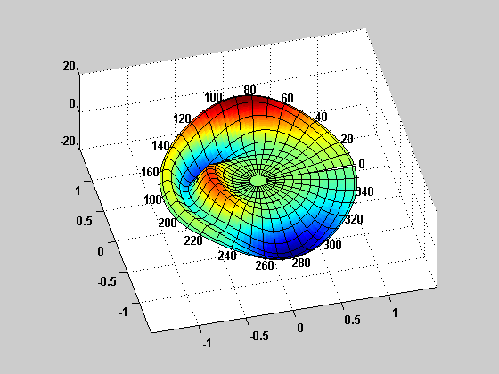
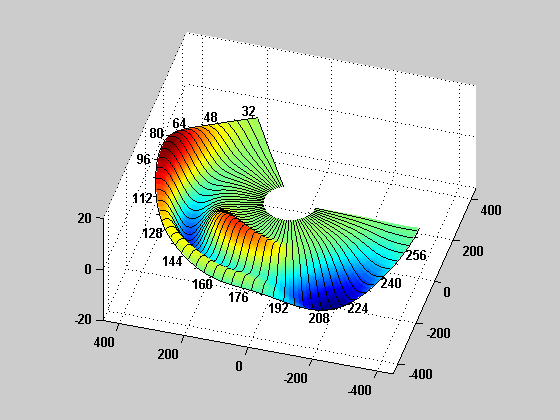
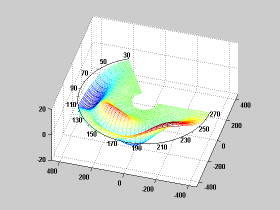
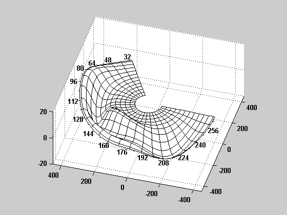
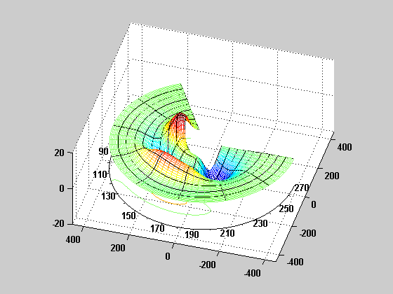
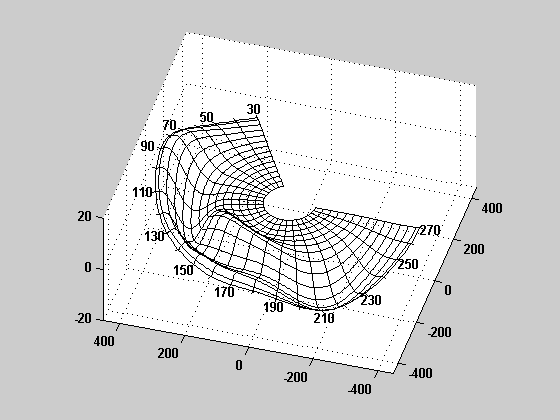
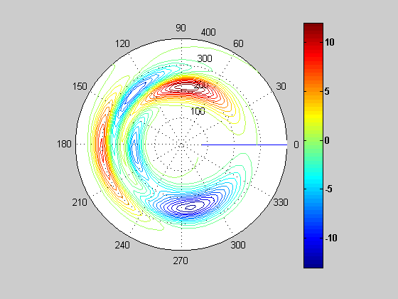

Contents
Test the polarplot3d function
P = peaks(101);
P = (P+rot90(P)-rot90(3*fliplr(P)));
Q = P;
P(62:end,:) = [];
t1 = 2*pi;
t2 = [30 270]*pi/180;
r1 = 400;
r2 = [80 400];
t3 = fliplr(t2);
r3 = fliplr(r2);
axprop = {'DataAspectRatio',[10 10 1],'View',[-74 40],...
'Xlim', [-450 450], 'Ylim',[-450 450],...
'XTick',[-400 -200 0 200 400],'YTick',[-400 -200 0 200 400]};
plot using default arguments
figure;
polarplot3d(P);
set(gca,'DataAspectRatio',[1 1 40],'View',[-14 40],...
'Xlim', [-1.5 1.5], 'Ylim', [-1.5 1.5],...
'XTick',[-1 -0.5 0 0.5 1],'YTick',[-1 -0.5 0 0.5 1]);

plot of an incomplete polar annulus
figure;
polarplot3d(P,'plottype','surf','angularrange',t2,'radialrange',r2,...
'polargrid',[0 48],'tickspacing',8,...
'plotprops',{'Linestyle','none'});
set(gca,axprop{:});

3d surface plot with contours
figure;
polarplot3d(P,'plottype','surfcn','angularrange',t2,'radialrange',r2,...
'polargrid',[10 24],'tickspacing',15);
set(gca,axprop{:});
mesh plot with polar axis at mean value, reversed angular sense
figure;
polarplot3d(P,'plottype','mesh','angularrange',t3,'radialrange',r2,...
'meshscale',2,'polargrid',[0 0],'axislocation','mean');
set(gca,axprop{:});

mesh plot with polar axis along edge of surface
figure;
polarplot3d(P,'plottype','meshl','angularrange',t2,'radialrange',r2,...
'polargrid',[10 24],'tickspacing',8,...
'plotprops',{'Linestyle','none'});
set(gca,axprop{:});

mesh plot with contours, overlay 8 by 8 polar grid
figure;
polarplot3d(P,'plottype','meshc','angularrange',t2,'radialrange',r3,...
'meshscale',2,'polargrid',[8 8]);
set(gca,axprop{:});

wireframe plot
figure;
polarplot3d(P,'plottype','wire','angularrange',t2,'radialrange',r2,...
'polargrid',[12 24]);
set(gca,axprop{:});

2d contour plot, reversed radial sense, contour levels at integer boundaries
cl = round(min(Q(:))-1):1:round(max(Q(:))+1);
figure;
polarplot3d(Q,'plottype','contour','angularrange',t1,'radialrange',r3,...
'meshscale',2,'polargrid',[0 0],'contourlines',cl);
